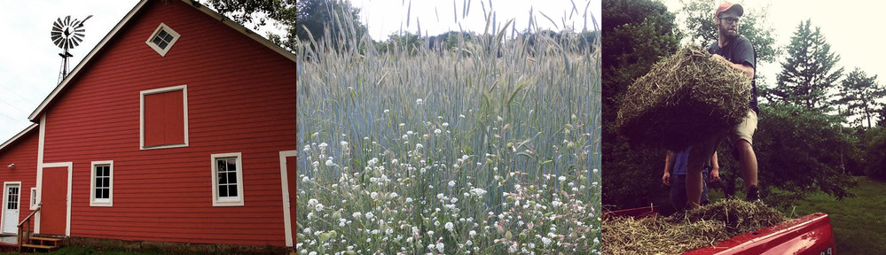

Supporting farmers in the Twin Cities area
In 2015 the Sandbox Center for Regenerative Entrepreneurship launched a successful farmer and incubated several young farmers. Despite this success, we are transitioning. We feel that we can more adequately represent emerging farmers by limiting our assistance to one farm.
